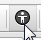
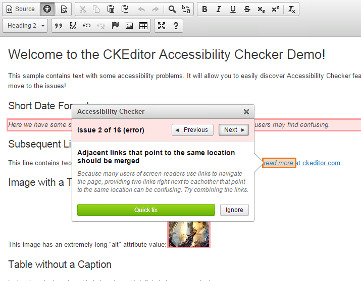
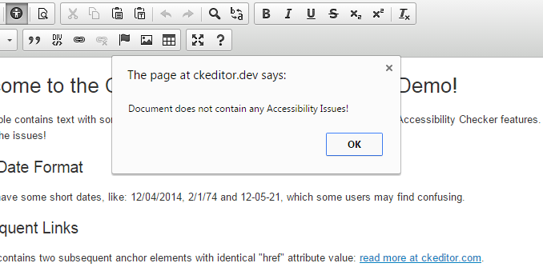
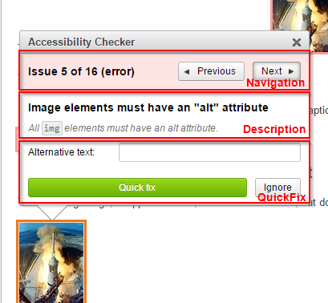
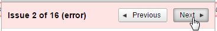
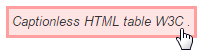
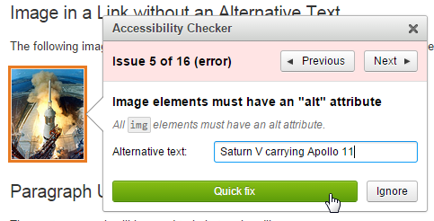
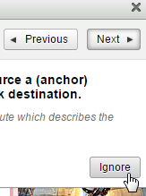
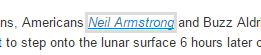
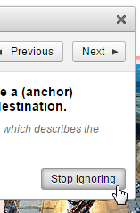

Accessibility Checker Functionality Overview
Table of contents
- Running Accessibility Checker
- What Exactly Are Issues?
- Checking Mode
- Listening Mode
- Keyboard Shortcuts
Running Accessibility Checker
You can enable Accessibility Checker by clicking the Check Accessibility  toolbar button. Once the button is clicked, Accessibility Checker will perform a very quick checking process. Typically it takes a fraction of a second. Depending on the result, Accessibility Checker will switch to checking mode or inform you that the document contains no accessibility issues.
Issues Found — Checking Mode
When Accessibility Checker finds some issues, it will display a panel containing the tools needed for understanding and solving the problem.

Accessibility problems are presented as one issue at a time, allowing you to iterate over the entire list. Issues can also be ignored (see the Ignoring Issues). For more information about checking mode please refer to the Checking Mode section.
No Issues
If no issues were found in the document, Accessibility Checker will inform you about it.

This means that your content is validated.
What Exactly Are Issues?
An issue represents a single accessibility problem in your content, as defined by your checking engine. Issue are grouped into different types.
Issue Types
- Error – The checking engine is 100% certain that the highlighted element contains an accessibility issue.
- Warning – The checking engine discovered that there is a possibility of a given error, but it does not have 100% certainty.
- Notice – The checking engine has no way to detect this issue, so it points an issue only as a notice and the user can verify if the content satisfies the given rule.
In checking mode the highlight color will slightly differ in order to hint the issue type.
Checking Mode
Checking mode is enabled when there is at least one issue in the content. It shows a panel containing all key information about the currently focused issue.
It is designed for:
- Quick problem identification (with a meaningful title, description, help links).
- Navigation over the detected issues.
- Fixing the problems, ideally without leaving the panel.
The checking mode will work on a single issue at a time, allowing you to iterate over all issues found in the document.
The following picture will highlight the most important parts of the panel shown in the checking mode.

Navigating Over Issues
Multiple ways to navigate over issues are available.
Navigation Buttons
Use the Previous or Next buttons in the Accessibility Checker panel to move between issues.

Clicking a Selected Issue
Since issues are highlighted in CKEditor, you can click an issue with your mouse. It will focus the first issue within the selected element. The possibility to focus an issue is indicated by a hightlight and a cursor change.

Using the Keyboard
You can also use the keyboard to move across issues. A few keyboard shortcuts were defined to make navigation easy and intuitive.
Please refer to the Keyboard Shortcuts section for a complete list of available keystrokes.
Using Quick Fixes
Quick Fix is a powerful feature designed to solve issues as quickly as possible, without leaving the Accessibility Checker panel.
There are two Quick Fix types:
- Automatic – Does not require any user input at all to fix the problem.
- Semi-automatic – Requires the user to provide some information before applying the Quick Fix.
Working with Quick Fixes
Depending on the Quick Fix type, two approaches are possible.
Automatic Quick Fix
For automatic Quick Fixes your job comes down to pressing the Quick Fix button in the Accessibility Checker panel.

Once the button is pressed, the fix is applied. This will result in a change of the HTML source of your content.
Semi-Automatic Quick Fix
A semi-automatic Quick Fix requires some action from the user, typically requested by a form text input in the Accessibility Checker panel.
For example:

Initially this image has no alternative text so Quick Fix asks the user to provide it as it is unable to determine this automatically.
User Input Validation
Quick Fixes are also smart enough to validate the user input data if needed.
For example, it is recommended that an alternative text for an image should be shorter than 100 characters. If the user enters a text that is longer than 100 characters into the "Alternative Text" field and tries to apply it with a Quick Fix, Accessibility Checker will raise an error warning the user that the text is too long.

Adding Quick Fixes
Quick Fix feature was created with extensibility in mind, so it is very easy for a developer to add new, custom Quick Fixes to Accessibility Checker.
Ignoring Issues
Issues reported by Accessibility Checker can also be ignored. This can be done by clicking the Ignore button for each selected issue in the Accessibility Checker panel.

If an issue is ignored, it will gain very subtle highlight which no longer indicates the initial issue type, as shown below.

It is still possible to open Accessibility Checker on an ignored issue by clicking it, by navigating to it with your keyboard or moving to it from the previous or next issue.
Once the issue is ignored you can also unset its ignore status by clicking the Stop ignoring button.

Switching to Listening Mode
When you wish to introduce some manual changes to your content, Accessibility Checker will switch to listening mode, waiting for your changes to be done.
There are two ways of switching Accessibility Checker to listening mode after its initial activation:
- Clicking anywhere in the CKEditor content area.
- Pressing the listening mode keyboard shortcut.
Listening Mode
Listening mode is enabled when you want to make a quick change to the document.
In listening mode Accessibility Checker minimizes itself and waits until you are finished editing your content. Listening mode will put the following indicator in the bottom right-hand corner of your browser:

When you are done with your changes you can return to checking the content by clicking the Check again button.
Keyboard Shortcuts
Accessibility Checker comes with good keyboard support. The following table describes default keystrokes and actions assigned to them.
Keyboard Shortcuts for Windows / Linux
| Command | Keystroke | Restrictions |
|---|---|---|
| Open/Close Accessibility Checker | Ctrl+Alt+E | |
| Next Issue | Ctrl+E | Checking mode only |
| Previous Issue | Ctrl+Shift+E | Checking mode only |
| Close Accessibility Checker | Esc | |
| Switch to listening mode | Shift+Esc | Checking mode only |
| Switch to checking mode | Shift+Esc | Listening mode only |
Keyboard Shortcuts for Mac
| Command | Keystroke | Restrictions |
|---|---|---|
| Open/Close Accessibility Checker | Command+Option+E | |
| Next Issue | Command+E | Checking mode only |
| Previous Issue | Command+Shift+E | Checking mode only |
| Close Accessibility Checker | Esc | |
| Switch to listening mode | Shift+Esc | Checking mode only |
| Switch to checking mode | Shift+Esc | Listening mode only |
Please note that the predefined keyboard shortcuts can be changed with the custom configuration.
Contact us:
Toll-free (US/CAN): +1 800 820 4009 Internationally: +1 650 521 9065 sales@cksource.com
Working hours: 1am-3pm PST, 4am-6pm EST, 10am-12am CET